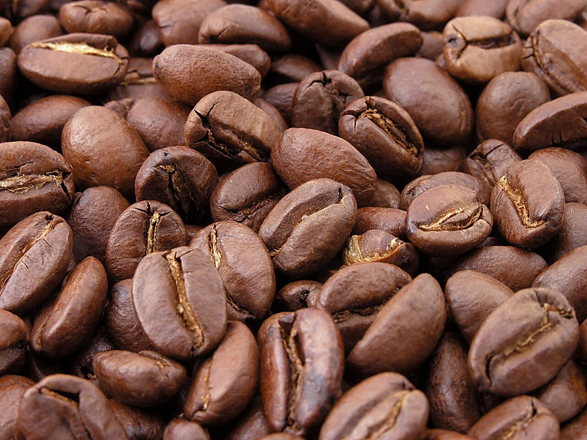

1/2
店のこと
店のこと
お店について確認できているのは、所在地とInstagramのアカウントだけです。
2拍
このページの「想像してみる」部分は、制作側が想像して書いたものです。お店の実際の様子・考え・メニューとは関係がありません。
確認できていること
- 店名は「ときのま かふぇ」、業種はカフェ
- 所在地は大分県由布市挾間町小野１９７７(〒879-5522)
- 電話番号はなし。連絡はInstagramから
- 営業時間・定休日・メニュー・価格・ご予約・駐車場は準備中

想像してみる
「ときのま」という名前から
由来は分かりません。制作側は、「ときのま」という言葉が持つ「少しの間」の感じから、ほんの短い休符のような時間を思い浮かべました。実際のお店の姿ではありません。

